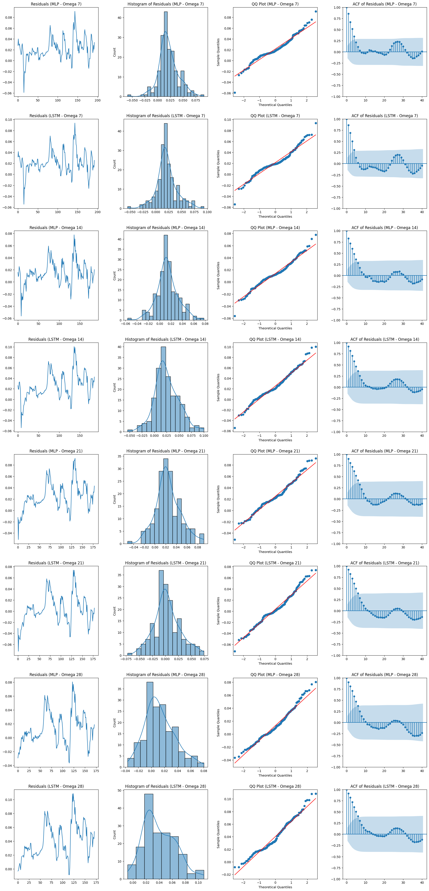

<!DOCTYPE html>


<html lang="en" data-content_root="./" >

  <head>
    <meta charset="utf-8" />
    <meta name="viewport" content="width=device-width, initial-scale=1.0" /><meta name="viewport" content="width=device-width, initial-scale=1" />

    <title>LSTM &amp; MLP &#8212; jbook_ml202330</title>
  
  
  
  <script data-cfasync="false">
    document.documentElement.dataset.mode = localStorage.getItem("mode") || "";
    document.documentElement.dataset.theme = localStorage.getItem("theme") || "";
  </script>
  
  <!-- Loaded before other Sphinx assets -->
  <link href="_static/styles/theme.css?digest=3ee479438cf8b5e0d341" rel="stylesheet" />
<link href="_static/styles/bootstrap.css?digest=3ee479438cf8b5e0d341" rel="stylesheet" />
<link href="_static/styles/pydata-sphinx-theme.css?digest=3ee479438cf8b5e0d341" rel="stylesheet" />

  
  <link href="_static/vendor/fontawesome/6.5.2/css/all.min.css?digest=3ee479438cf8b5e0d341" rel="stylesheet" />
  <link rel="preload" as="font" type="font/woff2" crossorigin href="_static/vendor/fontawesome/6.5.2/webfonts/fa-solid-900.woff2" />
<link rel="preload" as="font" type="font/woff2" crossorigin href="_static/vendor/fontawesome/6.5.2/webfonts/fa-brands-400.woff2" />
<link rel="preload" as="font" type="font/woff2" crossorigin href="_static/vendor/fontawesome/6.5.2/webfonts/fa-regular-400.woff2" />

    <link rel="stylesheet" type="text/css" href="_static/pygments.css?v=fa44fd50" />
    <link rel="stylesheet" type="text/css" href="_static/styles/sphinx-book-theme.css?v=384b581d" />
    <link rel="stylesheet" type="text/css" href="_static/togglebutton.css?v=13237357" />
    <link rel="stylesheet" type="text/css" href="_static/copybutton.css?v=76b2166b" />
    <link rel="stylesheet" type="text/css" href="_static/mystnb.4510f1fc1dee50b3e5859aac5469c37c29e427902b24a333a5f9fcb2f0b3ac41.css?v=be8a1c11" />
    <link rel="stylesheet" type="text/css" href="_static/sphinx-thebe.css?v=4fa983c6" />
    <link rel="stylesheet" type="text/css" href="_static/sphinx-design.min.css?v=87e54e7c" />
  
  <!-- Pre-loaded scripts that we'll load fully later -->
  <link rel="preload" as="script" href="_static/scripts/bootstrap.js?digest=3ee479438cf8b5e0d341" />
<link rel="preload" as="script" href="_static/scripts/pydata-sphinx-theme.js?digest=3ee479438cf8b5e0d341" />
  <script src="_static/vendor/fontawesome/6.5.2/js/all.min.js?digest=3ee479438cf8b5e0d341"></script>

    <script src="_static/documentation_options.js?v=9eb32ce0"></script>
    <script src="_static/doctools.js?v=9a2dae69"></script>
    <script src="_static/sphinx_highlight.js?v=dc90522c"></script>
    <script src="_static/clipboard.min.js?v=a7894cd8"></script>
    <script src="_static/copybutton.js?v=f281be69"></script>
    <script src="_static/scripts/sphinx-book-theme.js?v=efea14e4"></script>
    <script>let toggleHintShow = 'Click to show';</script>
    <script>let toggleHintHide = 'Click to hide';</script>
    <script>let toggleOpenOnPrint = 'true';</script>
    <script src="_static/togglebutton.js?v=4a39c7ea"></script>
    <script>var togglebuttonSelector = '.toggle, .admonition.dropdown';</script>
    <script src="_static/design-tabs.js?v=f930bc37"></script>
    <script>const THEBE_JS_URL = "https://unpkg.com/thebe@0.8.2/lib/index.js"; const thebe_selector = ".thebe,.cell"; const thebe_selector_input = "pre"; const thebe_selector_output = ".output, .cell_output"</script>
    <script async="async" src="_static/sphinx-thebe.js?v=c100c467"></script>
    <script>var togglebuttonSelector = '.toggle, .admonition.dropdown';</script>
    <script>const THEBE_JS_URL = "https://unpkg.com/thebe@0.8.2/lib/index.js"; const thebe_selector = ".thebe,.cell"; const thebe_selector_input = "pre"; const thebe_selector_output = ".output, .cell_output"</script>
    <script>window.MathJax = {"options": {"processHtmlClass": "tex2jax_process|mathjax_process|math|output_area"}}</script>
    <script defer="defer" src="https://cdn.jsdelivr.net/npm/mathjax@3/es5/tex-mml-chtml.js"></script>
    <script>DOCUMENTATION_OPTIONS.pagename = 'prueba';</script>
    <link rel="index" title="Index" href="genindex.html" />
    <link rel="search" title="Search" href="search.html" />
    <link rel="prev" title="Modelos Estadísticos" href="markdown-notebooks.html" />
  <meta name="viewport" content="width=device-width, initial-scale=1"/>
  <meta name="docsearch:language" content="en"/>
  </head>
  
  
  <body data-bs-spy="scroll" data-bs-target=".bd-toc-nav" data-offset="180" data-bs-root-margin="0px 0px -60%" data-default-mode="">

  
  
  <div id="pst-skip-link" class="skip-link d-print-none"><a href="#main-content">Skip to main content</a></div>
  
  <div id="pst-scroll-pixel-helper"></div>
  
  <button type="button" class="btn rounded-pill" id="pst-back-to-top">
    <i class="fa-solid fa-arrow-up"></i>Back to top</button>

  
  <input type="checkbox"
          class="sidebar-toggle"
          id="pst-primary-sidebar-checkbox"/>
  <label class="overlay overlay-primary" for="pst-primary-sidebar-checkbox"></label>
  
  <input type="checkbox"
          class="sidebar-toggle"
          id="pst-secondary-sidebar-checkbox"/>
  <label class="overlay overlay-secondary" for="pst-secondary-sidebar-checkbox"></label>
  
  <div class="search-button__wrapper">
    <div class="search-button__overlay"></div>
    <div class="search-button__search-container">
<form class="bd-search d-flex align-items-center"
      action="search.html"
      method="get">
  <i class="fa-solid fa-magnifying-glass"></i>
  <input type="search"
         class="form-control"
         name="q"
         id="search-input"
         placeholder="Search this book..."
         aria-label="Search this book..."
         autocomplete="off"
         autocorrect="off"
         autocapitalize="off"
         spellcheck="false"/>
  <span class="search-button__kbd-shortcut"><kbd class="kbd-shortcut__modifier">Ctrl</kbd>+<kbd>K</kbd></span>
</form></div>
  </div>

  <div class="pst-async-banner-revealer d-none">
  <aside id="bd-header-version-warning" class="d-none d-print-none" aria-label="Version warning"></aside>
</div>

  
    <header class="bd-header navbar navbar-expand-lg bd-navbar d-print-none">
    </header>
  

  <div class="bd-container">
    <div class="bd-container__inner bd-page-width">
      
      
      
      <div class="bd-sidebar-primary bd-sidebar">
        

  
  <div class="sidebar-header-items sidebar-primary__section">
    
    
    
    
  </div>
  
    <div class="sidebar-primary-items__start sidebar-primary__section">
        <div class="sidebar-primary-item">

  

<a class="navbar-brand logo" href="intro.html">
  
  
  
  
  
    
    
      
    
    
    
    <script>document.write(``);</script>
  
  
</a></div>
        <div class="sidebar-primary-item">

 <script>
 document.write(`
   <button class="btn navbar-btn search-button-field search-button__button" title="Search" aria-label="Search" data-bs-placement="bottom" data-bs-toggle="tooltip">
    <i class="fa-solid fa-magnifying-glass"></i>
    <span class="search-button__default-text">Search</span>
    <span class="search-button__kbd-shortcut"><kbd class="kbd-shortcut__modifier">Ctrl</kbd>+<kbd class="kbd-shortcut__modifier">K</kbd></span>
   </button>
 `);
 </script></div>
        <div class="sidebar-primary-item"><nav class="bd-links bd-docs-nav" aria-label="Main">
    <div class="bd-toc-item navbar-nav active">
        
        <ul class="nav bd-sidenav bd-sidenav__home-link">
            <li class="toctree-l1">
                <a class="reference internal" href="intro.html">
                    Welcome to your Jupyter Book
                </a>
            </li>
        </ul>
        <ul class="current nav bd-sidenav">
<li class="toctree-l1"><a class="reference internal" href="notebooks.html">Análisis Exploratorio</a></li>


<li class="toctree-l1"><a class="reference internal" href="markdown-notebooks.html">Modelos Estadísticos</a></li>


<li class="toctree-l1 current active"><a class="current reference internal" href="#">LSTM &amp; MLP</a></li>

</ul>

    </div>
</nav></div>
    </div>
  
  
  <div class="sidebar-primary-items__end sidebar-primary__section">
  </div>
  
  <div id="rtd-footer-container"></div>


      </div>
      
      <main id="main-content" class="bd-main" role="main">
        
        

<div class="sbt-scroll-pixel-helper"></div>

          <div class="bd-content">
            <div class="bd-article-container">
              
              <div class="bd-header-article d-print-none">
<div class="header-article-items header-article__inner">
  
    <div class="header-article-items__start">
      
        <div class="header-article-item"><label class="sidebar-toggle primary-toggle btn btn-sm" for="__primary" title="Toggle primary sidebar" data-bs-placement="bottom" data-bs-toggle="tooltip">
  <span class="fa-solid fa-bars"></span>
</label></div>
      
    </div>
  
  
    <div class="header-article-items__end">
      
        <div class="header-article-item">

<div class="article-header-buttons">


<div class="dropdown dropdown-source-buttons">
  <button class="btn dropdown-toggle" type="button" data-bs-toggle="dropdown" aria-expanded="false" aria-label="Source repositories">
    <i class="fab fa-github"></i>
  </button>
  <ul class="dropdown-menu">
      
      
      
      <li><a href="https://github.com/executablebooks/jupyter-book" target="_blank"
   class="btn btn-sm btn-source-repository-button dropdown-item"
   title="Source repository"
   data-bs-placement="left" data-bs-toggle="tooltip"
>
  

<span class="btn__icon-container">
  <i class="fab fa-github"></i>
  </span>
<span class="btn__text-container">Repository</span>
</a>
</li>
      
      
      
      
      <li><a href="https://github.com/executablebooks/jupyter-book/issues/new?title=Issue%20on%20page%20%2Fprueba.html&body=Your%20issue%20content%20here." target="_blank"
   class="btn btn-sm btn-source-issues-button dropdown-item"
   title="Open an issue"
   data-bs-placement="left" data-bs-toggle="tooltip"
>
  

<span class="btn__icon-container">
  <i class="fas fa-lightbulb"></i>
  </span>
<span class="btn__text-container">Open issue</span>
</a>
</li>
      
  </ul>
</div>


<div class="dropdown dropdown-download-buttons">
  <button class="btn dropdown-toggle" type="button" data-bs-toggle="dropdown" aria-expanded="false" aria-label="Download this page">
    <i class="fas fa-download"></i>
  </button>
  <ul class="dropdown-menu">
      
      
      
      <li><a href="_sources/prueba.ipynb" target="_blank"
   class="btn btn-sm btn-download-source-button dropdown-item"
   title="Download source file"
   data-bs-placement="left" data-bs-toggle="tooltip"
>
  

<span class="btn__icon-container">
  <i class="fas fa-file"></i>
  </span>
<span class="btn__text-container">.ipynb</span>
</a>
</li>
      
      
      
      
      <li>
<button onclick="window.print()"
  class="btn btn-sm btn-download-pdf-button dropdown-item"
  title="Print to PDF"
  data-bs-placement="left" data-bs-toggle="tooltip"
>
  

<span class="btn__icon-container">
  <i class="fas fa-file-pdf"></i>
  </span>
<span class="btn__text-container">.pdf</span>
</button>
</li>
      
  </ul>
</div>


<button onclick="toggleFullScreen()"
  class="btn btn-sm btn-fullscreen-button"
  title="Fullscreen mode"
  data-bs-placement="bottom" data-bs-toggle="tooltip"
>
  

<span class="btn__icon-container">
  <i class="fas fa-expand"></i>
  </span>

</button>


<script>
document.write(`
  <button class="btn btn-sm navbar-btn theme-switch-button" title="light/dark" aria-label="light/dark" data-bs-placement="bottom" data-bs-toggle="tooltip">
    <span class="theme-switch nav-link" data-mode="light"><i class="fa-solid fa-sun fa-lg"></i></span>
    <span class="theme-switch nav-link" data-mode="dark"><i class="fa-solid fa-moon fa-lg"></i></span>
    <span class="theme-switch nav-link" data-mode="auto"><i class="fa-solid fa-circle-half-stroke fa-lg"></i></span>
  </button>
`);
</script>


<script>
document.write(`
  <button class="btn btn-sm navbar-btn search-button search-button__button" title="Search" aria-label="Search" data-bs-placement="bottom" data-bs-toggle="tooltip">
    <i class="fa-solid fa-magnifying-glass fa-lg"></i>
  </button>
`);
</script>
<label class="sidebar-toggle secondary-toggle btn btn-sm" for="__secondary"title="Toggle secondary sidebar" data-bs-placement="bottom" data-bs-toggle="tooltip">
    <span class="fa-solid fa-list"></span>
</label>
</div></div>
      
    </div>
  
</div>
</div>
              
              

<div id="jb-print-docs-body" class="onlyprint">
    <h1>LSTM & MLP</h1>
    <!-- Table of contents -->
    <div id="print-main-content">
        <div id="jb-print-toc">
            
            <div>
                <h2> Contents </h2>
            </div>
            <nav aria-label="Page">
                <ul class="visible nav section-nav flex-column">
<li class="toc-h1 nav-item toc-entry"><a class="reference internal nav-link" href="#">LSTM &amp; MLP</a></li>
<li class="toc-h1 nav-item toc-entry"><a class="reference internal nav-link" href="#mejor-metrica-de-evaluacion-para-cada-modelo">Mejor Métrica de Evaluación para Cada Modelo</a><ul class="visible nav section-nav flex-column">
<li class="toc-h2 nav-item toc-entry"><a class="reference internal nav-link" href="#mlp">MLP</a></li>
<li class="toc-h2 nav-item toc-entry"><a class="reference internal nav-link" href="#lstm">LSTM</a></li>
<li class="toc-h2 nav-item toc-entry"><a class="reference internal nav-link" href="#valores-optimos-para-omega">Valores Óptimos para <span class="math notranslate nohighlight">\(\omega\)</span></a><ul class="nav section-nav flex-column">
<li class="toc-h3 nav-item toc-entry"><a class="reference internal nav-link" href="#id1">MLP</a></li>
<li class="toc-h3 nav-item toc-entry"><a class="reference internal nav-link" href="#id2">LSTM</a></li>
</ul>
</li>
<li class="toc-h2 nav-item toc-entry"><a class="reference internal nav-link" href="#dimensiones-optimas-de-x-text-train-y-y-text-train">Dimensiones Óptimas de <span class="math notranslate nohighlight">\(X_{\text{train}}\)</span> y <span class="math notranslate nohighlight">\(y_{\text{train}}\)</span></a><ul class="nav section-nav flex-column">
<li class="toc-h3 nav-item toc-entry"><a class="reference internal nav-link" href="#id3">MLP</a></li>
<li class="toc-h3 nav-item toc-entry"><a class="reference internal nav-link" href="#id4">LSTM</a></li>
<li class="toc-h3 nav-item toc-entry"><a class="reference internal nav-link" href="#justificacion">Justificación</a></li>
</ul>
</li>
</ul>
</li>
</ul>

            </nav>
        </div>
    </div>
</div>

              
                
<div id="searchbox"></div>
                <article class="bd-article">
                  
  <section class="tex2jax_ignore mathjax_ignore" id="lstm-mlp">
<h1>LSTM &amp; MLP<a class="headerlink" href="#lstm-mlp" title="Link to this heading">#</a></h1>
<ul class="simple">
<li><p>Se realiza un análisis exhaustivo de las predicciones de precios de cierre de Bitcoin utilizando modelos de aprendizaje profundo, específicamente MLP y LSTM, adaptados a diferentes periodos temporales (7, 14, 21 y 28 días). Los datos se normalizan y se dividen en conjuntos de entrenamiento, validación y prueba para cada periodo. Las predicciones se evalúan con métricas como el error porcentual medio absoluto (MAPE), la raíz del error cuadrático medio (RMSE) y el coeficiente de determinación (R2), así como con pruebas estadísticas que miden la normalidad y estacionariedad de los residuos.</p></li>
<li><p>Además, se visualizan los resultados de cada modelo y configuración temporal a través de gráficos que incluyen histogramas, QQ plots y autocorrelaciones de residuos, lo que permite una evaluación visual de la calidad de las predicciones. Todos estos resultados se consolidan y comparan en un DataFrame para determinar la eficacia de cada configuración del modelo en predecir el comportamiento del precio del Bitcoin.</p></li>
</ul>
<div class="cell docutils container">
<div class="cell_input docutils container">
<div class="highlight-ipython3 notranslate"><div class="highlight"><pre><span></span><span class="kn">import</span> <span class="nn">yfinance</span> <span class="k">as</span> <span class="nn">yf</span>
<span class="kn">import</span> <span class="nn">numpy</span> <span class="k">as</span> <span class="nn">np</span>
<span class="kn">import</span> <span class="nn">pandas</span> <span class="k">as</span> <span class="nn">pd</span>
<span class="kn">from</span> <span class="nn">sklearn.preprocessing</span> <span class="kn">import</span> <span class="n">MinMaxScaler</span>
<span class="kn">from</span> <span class="nn">tensorflow.keras.models</span> <span class="kn">import</span> <span class="n">Sequential</span>
<span class="kn">from</span> <span class="nn">tensorflow.keras.layers</span> <span class="kn">import</span> <span class="n">Dense</span><span class="p">,</span> <span class="n">LSTM</span>
<span class="kn">from</span> <span class="nn">sklearn.metrics</span> <span class="kn">import</span> <span class="n">mean_absolute_percentage_error</span><span class="p">,</span> <span class="n">mean_squared_error</span><span class="p">,</span> <span class="n">r2_score</span>
<span class="kn">from</span> <span class="nn">statsmodels.tsa.stattools</span> <span class="kn">import</span> <span class="n">adfuller</span><span class="p">,</span> <span class="n">kpss</span>
<span class="kn">from</span> <span class="nn">scipy.stats</span> <span class="kn">import</span> <span class="n">kurtosis</span><span class="p">,</span> <span class="n">skew</span><span class="p">,</span> <span class="n">jarque_bera</span>
<span class="kn">import</span> <span class="nn">matplotlib.pyplot</span> <span class="k">as</span> <span class="nn">plt</span>
<span class="kn">import</span> <span class="nn">seaborn</span> <span class="k">as</span> <span class="nn">sns</span>
<span class="kn">import</span> <span class="nn">statsmodels.api</span> <span class="k">as</span> <span class="nn">sm</span>
<span class="kn">import</span> <span class="nn">warnings</span>
<span class="n">warnings</span><span class="o">.</span><span class="n">filterwarnings</span><span class="p">(</span><span class="s1">&#39;ignore&#39;</span><span class="p">,</span> <span class="n">category</span><span class="o">=</span><span class="ne">UserWarning</span><span class="p">)</span> <span class="c1"># Para ignorar UserWarnings</span>
<span class="n">warnings</span><span class="o">.</span><span class="n">filterwarnings</span><span class="p">(</span><span class="s1">&#39;ignore&#39;</span><span class="p">,</span> <span class="n">category</span><span class="o">=</span><span class="n">pd</span><span class="o">.</span><span class="n">errors</span><span class="o">.</span><span class="n">SettingWithCopyWarning</span><span class="p">)</span> 

<span class="c1"># Descargar datos de BTC-USD</span>
<span class="n">btc_data</span> <span class="o">=</span> <span class="n">yf</span><span class="o">.</span><span class="n">download</span><span class="p">(</span><span class="s1">&#39;BTC-USD&#39;</span><span class="p">,</span> <span class="n">start</span><span class="o">=</span><span class="s1">&#39;2017-11-09&#39;</span><span class="p">,</span> <span class="n">end</span><span class="o">=</span><span class="s1">&#39;2023-05-07&#39;</span><span class="p">,</span> <span class="n">progress</span><span class="o">=</span><span class="kc">False</span><span class="p">)</span>
<span class="n">btc_data</span> <span class="o">=</span> <span class="n">btc_data</span><span class="p">[[</span><span class="s1">&#39;Close&#39;</span><span class="p">]]</span>

<span class="c1"># Normalizar los datos</span>
<span class="n">scaler</span> <span class="o">=</span> <span class="n">MinMaxScaler</span><span class="p">(</span><span class="n">feature_range</span><span class="o">=</span><span class="p">(</span><span class="mi">0</span><span class="p">,</span> <span class="mi">1</span><span class="p">))</span>
<span class="n">btc_data</span><span class="p">[</span><span class="s1">&#39;Close&#39;</span><span class="p">]</span> <span class="o">=</span> <span class="n">scaler</span><span class="o">.</span><span class="n">fit_transform</span><span class="p">(</span><span class="n">btc_data</span><span class="p">[</span><span class="s1">&#39;Close&#39;</span><span class="p">]</span><span class="o">.</span><span class="n">values</span><span class="o">.</span><span class="n">reshape</span><span class="p">(</span><span class="o">-</span><span class="mi">1</span><span class="p">,</span><span class="mi">1</span><span class="p">))</span>

<span class="c1"># Crear conjuntos de entrenamiento, validación y prueba</span>
<span class="k">def</span> <span class="nf">create_dataset</span><span class="p">(</span><span class="n">data</span><span class="p">,</span> <span class="n">time_step</span><span class="o">=</span><span class="mi">1</span><span class="p">):</span>
    <span class="n">X</span><span class="p">,</span> <span class="n">y</span> <span class="o">=</span> <span class="p">[],</span> <span class="p">[]</span>
    <span class="k">for</span> <span class="n">i</span> <span class="ow">in</span> <span class="nb">range</span><span class="p">(</span><span class="nb">len</span><span class="p">(</span><span class="n">data</span><span class="p">)</span><span class="o">-</span><span class="n">time_step</span><span class="o">-</span><span class="mi">1</span><span class="p">):</span>
        <span class="n">a</span> <span class="o">=</span> <span class="n">data</span><span class="p">[</span><span class="n">i</span><span class="p">:(</span><span class="n">i</span><span class="o">+</span><span class="n">time_step</span><span class="p">),</span> <span class="mi">0</span><span class="p">]</span>
        <span class="n">X</span><span class="o">.</span><span class="n">append</span><span class="p">(</span><span class="n">a</span><span class="p">)</span>
        <span class="n">y</span><span class="o">.</span><span class="n">append</span><span class="p">(</span><span class="n">data</span><span class="p">[</span><span class="n">i</span> <span class="o">+</span> <span class="n">time_step</span><span class="p">,</span> <span class="mi">0</span><span class="p">])</span>
    <span class="k">return</span> <span class="n">np</span><span class="o">.</span><span class="n">array</span><span class="p">(</span><span class="n">X</span><span class="p">),</span> <span class="n">np</span><span class="o">.</span><span class="n">array</span><span class="p">(</span><span class="n">y</span><span class="p">)</span>

<span class="c1"># Función para crear el modelo MLP</span>
<span class="k">def</span> <span class="nf">create_mlp_model</span><span class="p">(</span><span class="n">input_dim</span><span class="p">):</span>
    <span class="n">model</span> <span class="o">=</span> <span class="n">Sequential</span><span class="p">()</span>
    <span class="n">model</span><span class="o">.</span><span class="n">add</span><span class="p">(</span><span class="n">Dense</span><span class="p">(</span><span class="mi">50</span><span class="p">,</span> <span class="n">activation</span><span class="o">=</span><span class="s1">&#39;relu&#39;</span><span class="p">,</span> <span class="n">input_dim</span><span class="o">=</span><span class="n">input_dim</span><span class="p">))</span>
    <span class="n">model</span><span class="o">.</span><span class="n">add</span><span class="p">(</span><span class="n">Dense</span><span class="p">(</span><span class="mi">100</span><span class="p">,</span> <span class="n">activation</span><span class="o">=</span><span class="s1">&#39;relu&#39;</span><span class="p">))</span>
    <span class="n">model</span><span class="o">.</span><span class="n">add</span><span class="p">(</span><span class="n">Dense</span><span class="p">(</span><span class="mi">80</span><span class="p">,</span> <span class="n">activation</span><span class="o">=</span><span class="s1">&#39;relu&#39;</span><span class="p">))</span>
    <span class="n">model</span><span class="o">.</span><span class="n">add</span><span class="p">(</span><span class="n">Dense</span><span class="p">(</span><span class="mi">30</span><span class="p">,</span> <span class="n">activation</span><span class="o">=</span><span class="s1">&#39;relu&#39;</span><span class="p">))</span>
    <span class="n">model</span><span class="o">.</span><span class="n">add</span><span class="p">(</span><span class="n">Dense</span><span class="p">(</span><span class="mi">1</span><span class="p">,</span> <span class="n">activation</span><span class="o">=</span><span class="s1">&#39;linear&#39;</span><span class="p">))</span>
    <span class="n">model</span><span class="o">.</span><span class="n">compile</span><span class="p">(</span><span class="n">loss</span><span class="o">=</span><span class="s1">&#39;mean_squared_error&#39;</span><span class="p">,</span> <span class="n">optimizer</span><span class="o">=</span><span class="s1">&#39;adam&#39;</span><span class="p">)</span>
    <span class="k">return</span> <span class="n">model</span>

<span class="c1"># Función para crear el modelo LSTM</span>
<span class="k">def</span> <span class="nf">create_lstm_model</span><span class="p">(</span><span class="n">input_shape</span><span class="p">):</span>
    <span class="n">model</span> <span class="o">=</span> <span class="n">Sequential</span><span class="p">()</span>
    <span class="n">model</span><span class="o">.</span><span class="n">add</span><span class="p">(</span><span class="n">LSTM</span><span class="p">(</span><span class="mi">50</span><span class="p">,</span> <span class="n">return_sequences</span><span class="o">=</span><span class="kc">True</span><span class="p">,</span> <span class="n">input_shape</span><span class="o">=</span><span class="n">input_shape</span><span class="p">))</span>
    <span class="n">model</span><span class="o">.</span><span class="n">add</span><span class="p">(</span><span class="n">LSTM</span><span class="p">(</span><span class="mi">50</span><span class="p">,</span> <span class="n">return_sequences</span><span class="o">=</span><span class="kc">False</span><span class="p">))</span>
    <span class="n">model</span><span class="o">.</span><span class="n">add</span><span class="p">(</span><span class="n">Dense</span><span class="p">(</span><span class="mi">1</span><span class="p">,</span> <span class="n">activation</span><span class="o">=</span><span class="s1">&#39;linear&#39;</span><span class="p">))</span>
    <span class="n">model</span><span class="o">.</span><span class="n">compile</span><span class="p">(</span><span class="n">loss</span><span class="o">=</span><span class="s1">&#39;mean_squared_error&#39;</span><span class="p">,</span> <span class="n">optimizer</span><span class="o">=</span><span class="s1">&#39;adam&#39;</span><span class="p">)</span>
    <span class="k">return</span> <span class="n">model</span>

<span class="c1"># Función para evaluar el modelo</span>
<span class="k">def</span> <span class="nf">evaluate_model</span><span class="p">(</span><span class="n">model</span><span class="p">,</span> <span class="n">X_train</span><span class="p">,</span> <span class="n">y_train</span><span class="p">,</span> <span class="n">X_val</span><span class="p">,</span> <span class="n">y_val</span><span class="p">,</span> <span class="n">X_test</span><span class="p">,</span> <span class="n">y_test</span><span class="p">):</span>
    <span class="n">history</span> <span class="o">=</span> <span class="n">model</span><span class="o">.</span><span class="n">fit</span><span class="p">(</span><span class="n">X_train</span><span class="p">,</span> <span class="n">y_train</span><span class="p">,</span> <span class="n">validation_data</span><span class="o">=</span><span class="p">(</span><span class="n">X_val</span><span class="p">,</span> <span class="n">y_val</span><span class="p">),</span> <span class="n">epochs</span><span class="o">=</span><span class="mi">1</span><span class="p">,</span> <span class="n">batch_size</span><span class="o">=</span><span class="mi">32</span><span class="p">,</span> <span class="n">verbose</span><span class="o">=</span><span class="mi">0</span><span class="p">)</span>
    <span class="n">y_pred</span> <span class="o">=</span> <span class="n">model</span><span class="o">.</span><span class="n">predict</span><span class="p">(</span><span class="n">X_test</span><span class="p">)</span>
    <span class="n">mape</span> <span class="o">=</span> <span class="n">mean_absolute_percentage_error</span><span class="p">(</span><span class="n">y_test</span><span class="p">,</span> <span class="n">y_pred</span><span class="p">)</span>
    <span class="n">rmse</span> <span class="o">=</span> <span class="n">np</span><span class="o">.</span><span class="n">sqrt</span><span class="p">(</span><span class="n">mean_squared_error</span><span class="p">(</span><span class="n">y_test</span><span class="p">,</span> <span class="n">y_pred</span><span class="p">))</span>
    <span class="n">r2</span> <span class="o">=</span> <span class="n">r2_score</span><span class="p">(</span><span class="n">y_test</span><span class="p">,</span> <span class="n">y_pred</span><span class="p">)</span>

    <span class="n">residuals</span> <span class="o">=</span> <span class="n">y_test</span> <span class="o">-</span> <span class="n">y_pred</span><span class="o">.</span><span class="n">reshape</span><span class="p">(</span><span class="o">-</span><span class="mi">1</span><span class="p">)</span>
    <span class="n">kpss_stat</span><span class="p">,</span> <span class="n">kpss_p</span><span class="p">,</span> <span class="n">_</span><span class="p">,</span> <span class="n">_</span> <span class="o">=</span> <span class="n">kpss</span><span class="p">(</span><span class="n">residuals</span><span class="p">)</span>
    <span class="n">adf_stat</span><span class="p">,</span> <span class="n">adf_p</span><span class="p">,</span> <span class="n">_</span><span class="p">,</span> <span class="n">_</span><span class="p">,</span> <span class="n">_</span><span class="p">,</span> <span class="n">_</span> <span class="o">=</span> <span class="n">adfuller</span><span class="p">(</span><span class="n">residuals</span><span class="p">)</span>
    <span class="n">jb_stat</span><span class="p">,</span> <span class="n">jb_p</span> <span class="o">=</span> <span class="n">jarque_bera</span><span class="p">(</span><span class="n">residuals</span><span class="p">)</span>
    <span class="n">kurt</span> <span class="o">=</span> <span class="n">kurtosis</span><span class="p">(</span><span class="n">residuals</span><span class="p">)</span>
    <span class="n">skewness</span> <span class="o">=</span> <span class="n">skew</span><span class="p">(</span><span class="n">residuals</span><span class="p">)</span>

    <span class="k">return</span> <span class="n">mape</span><span class="p">,</span> <span class="n">rmse</span><span class="p">,</span> <span class="n">r2</span><span class="p">,</span> <span class="n">kurt</span><span class="p">,</span> <span class="n">skewness</span><span class="p">,</span> <span class="n">jb_p</span><span class="p">,</span> <span class="n">adf_p</span><span class="p">,</span> <span class="n">kpss_p</span><span class="p">,</span> <span class="n">residuals</span>


<span class="c1"># Función para graficar resultados</span>
<span class="k">def</span> <span class="nf">plot_results</span><span class="p">(</span><span class="n">residuals</span><span class="p">,</span> <span class="n">model_name</span><span class="p">,</span> <span class="n">omega</span><span class="p">,</span> <span class="n">fig</span><span class="p">,</span> <span class="n">axs</span><span class="p">,</span> <span class="n">index</span><span class="p">):</span>
    <span class="n">row</span> <span class="o">=</span> <span class="n">index</span> <span class="o">//</span> <span class="mi">4</span>
    <span class="n">col</span> <span class="o">=</span> <span class="n">index</span> <span class="o">%</span> <span class="mi">4</span>
    <span class="n">axs</span><span class="p">[</span><span class="n">row</span> <span class="o">*</span> <span class="mi">4</span> <span class="o">+</span> <span class="n">col</span><span class="p">,</span> <span class="mi">0</span><span class="p">]</span><span class="o">.</span><span class="n">plot</span><span class="p">(</span><span class="n">residuals</span><span class="p">)</span>
    <span class="n">axs</span><span class="p">[</span><span class="n">row</span> <span class="o">*</span> <span class="mi">4</span> <span class="o">+</span> <span class="n">col</span><span class="p">,</span> <span class="mi">0</span><span class="p">]</span><span class="o">.</span><span class="n">set_title</span><span class="p">(</span><span class="sa">f</span><span class="s1">&#39;Residuals (</span><span class="si">{</span><span class="n">model_name</span><span class="si">}</span><span class="s1"> - Omega </span><span class="si">{</span><span class="n">omega</span><span class="si">}</span><span class="s1">)&#39;</span><span class="p">)</span>
    <span class="n">sns</span><span class="o">.</span><span class="n">histplot</span><span class="p">(</span><span class="n">residuals</span><span class="p">,</span> <span class="n">kde</span><span class="o">=</span><span class="kc">True</span><span class="p">,</span> <span class="n">ax</span><span class="o">=</span><span class="n">axs</span><span class="p">[</span><span class="n">row</span> <span class="o">*</span> <span class="mi">4</span> <span class="o">+</span> <span class="n">col</span><span class="p">,</span> <span class="mi">1</span><span class="p">])</span>
    <span class="n">axs</span><span class="p">[</span><span class="n">row</span> <span class="o">*</span> <span class="mi">4</span> <span class="o">+</span> <span class="n">col</span><span class="p">,</span> <span class="mi">1</span><span class="p">]</span><span class="o">.</span><span class="n">set_title</span><span class="p">(</span><span class="sa">f</span><span class="s1">&#39;Histogram of Residuals (</span><span class="si">{</span><span class="n">model_name</span><span class="si">}</span><span class="s1"> - Omega </span><span class="si">{</span><span class="n">omega</span><span class="si">}</span><span class="s1">)&#39;</span><span class="p">)</span>
    <span class="n">sm</span><span class="o">.</span><span class="n">qqplot</span><span class="p">(</span><span class="n">residuals</span><span class="p">,</span> <span class="n">line</span><span class="o">=</span><span class="s1">&#39;s&#39;</span><span class="p">,</span> <span class="n">ax</span><span class="o">=</span><span class="n">axs</span><span class="p">[</span><span class="n">row</span> <span class="o">*</span> <span class="mi">4</span> <span class="o">+</span> <span class="n">col</span><span class="p">,</span> <span class="mi">2</span><span class="p">])</span>
    <span class="n">axs</span><span class="p">[</span><span class="n">row</span> <span class="o">*</span> <span class="mi">4</span> <span class="o">+</span> <span class="n">col</span><span class="p">,</span> <span class="mi">2</span><span class="p">]</span><span class="o">.</span><span class="n">set_title</span><span class="p">(</span><span class="sa">f</span><span class="s1">&#39;QQ Plot (</span><span class="si">{</span><span class="n">model_name</span><span class="si">}</span><span class="s1"> - Omega </span><span class="si">{</span><span class="n">omega</span><span class="si">}</span><span class="s1">)&#39;</span><span class="p">)</span>
    <span class="n">sm</span><span class="o">.</span><span class="n">graphics</span><span class="o">.</span><span class="n">tsa</span><span class="o">.</span><span class="n">plot_acf</span><span class="p">(</span><span class="n">residuals</span><span class="p">,</span> <span class="n">lags</span><span class="o">=</span><span class="mi">40</span><span class="p">,</span> <span class="n">ax</span><span class="o">=</span><span class="n">axs</span><span class="p">[</span><span class="n">row</span> <span class="o">*</span> <span class="mi">4</span> <span class="o">+</span> <span class="n">col</span><span class="p">,</span> <span class="mi">3</span><span class="p">])</span>
    <span class="n">axs</span><span class="p">[</span><span class="n">row</span> <span class="o">*</span> <span class="mi">4</span> <span class="o">+</span> <span class="n">col</span><span class="p">,</span> <span class="mi">3</span><span class="p">]</span><span class="o">.</span><span class="n">set_title</span><span class="p">(</span><span class="sa">f</span><span class="s1">&#39;ACF of Residuals (</span><span class="si">{</span><span class="n">model_name</span><span class="si">}</span><span class="s1"> - Omega </span><span class="si">{</span><span class="n">omega</span><span class="si">}</span><span class="s1">)&#39;</span><span class="p">)</span>

<span class="c1"># Lista de omegas</span>
<span class="n">omegas</span> <span class="o">=</span> <span class="p">[</span><span class="mi">7</span><span class="p">,</span> <span class="mi">14</span><span class="p">,</span> <span class="mi">21</span><span class="p">,</span> <span class="mi">28</span><span class="p">]</span>
<span class="n">results</span> <span class="o">=</span> <span class="p">[]</span>

<span class="n">fig</span><span class="p">,</span> <span class="n">axs</span> <span class="o">=</span> <span class="n">plt</span><span class="o">.</span><span class="n">subplots</span><span class="p">(</span><span class="mi">8</span><span class="p">,</span> <span class="mi">4</span><span class="p">,</span> <span class="n">figsize</span><span class="o">=</span><span class="p">(</span><span class="mi">20</span><span class="p">,</span> <span class="mi">40</span><span class="p">))</span>
<span class="n">fig</span><span class="o">.</span><span class="n">tight_layout</span><span class="p">(</span><span class="n">pad</span><span class="o">=</span><span class="mf">5.0</span><span class="p">)</span>

<span class="c1"># Evaluar para cada omega y cada modelo</span>
<span class="n">index</span> <span class="o">=</span> <span class="mi">0</span>
<span class="k">for</span> <span class="n">omega</span> <span class="ow">in</span> <span class="n">omegas</span><span class="p">:</span>
    <span class="n">time_step</span> <span class="o">=</span> <span class="n">omega</span>
    <span class="n">train_size</span> <span class="o">=</span> <span class="nb">int</span><span class="p">(</span><span class="nb">len</span><span class="p">(</span><span class="n">btc_data</span><span class="p">)</span> <span class="o">*</span> <span class="mf">0.7</span><span class="p">)</span>
    <span class="n">val_size</span> <span class="o">=</span> <span class="nb">int</span><span class="p">(</span><span class="nb">len</span><span class="p">(</span><span class="n">btc_data</span><span class="p">)</span> <span class="o">*</span> <span class="mf">0.2</span><span class="p">)</span>
    <span class="n">test_size</span> <span class="o">=</span> <span class="nb">len</span><span class="p">(</span><span class="n">btc_data</span><span class="p">)</span> <span class="o">-</span> <span class="n">train_size</span> <span class="o">-</span> <span class="n">val_size</span>

    <span class="n">train_data</span> <span class="o">=</span> <span class="n">btc_data</span><span class="o">.</span><span class="n">values</span><span class="p">[</span><span class="mi">0</span><span class="p">:</span><span class="n">train_size</span><span class="p">,:]</span>
    <span class="n">val_data</span> <span class="o">=</span> <span class="n">btc_data</span><span class="o">.</span><span class="n">values</span><span class="p">[</span><span class="n">train_size</span><span class="p">:</span><span class="n">train_size</span><span class="o">+</span><span class="n">val_size</span><span class="p">,:]</span>
    <span class="n">test_data</span> <span class="o">=</span> <span class="n">btc_data</span><span class="o">.</span><span class="n">values</span><span class="p">[</span><span class="n">train_size</span><span class="o">+</span><span class="n">val_size</span><span class="p">:</span><span class="nb">len</span><span class="p">(</span><span class="n">btc_data</span><span class="p">),:]</span>

    <span class="n">X_train</span><span class="p">,</span> <span class="n">y_train</span> <span class="o">=</span> <span class="n">create_dataset</span><span class="p">(</span><span class="n">train_data</span><span class="p">,</span> <span class="n">time_step</span><span class="p">)</span>
    <span class="n">X_val</span><span class="p">,</span> <span class="n">y_val</span> <span class="o">=</span> <span class="n">create_dataset</span><span class="p">(</span><span class="n">val_data</span><span class="p">,</span> <span class="n">time_step</span><span class="p">)</span>
    <span class="n">X_test</span><span class="p">,</span> <span class="n">y_test</span> <span class="o">=</span> <span class="n">create_dataset</span><span class="p">(</span><span class="n">test_data</span><span class="p">,</span> <span class="n">time_step</span><span class="p">)</span>

    <span class="c1"># Reshape input to be [samples, time steps, features]</span>
    <span class="n">X_train</span> <span class="o">=</span> <span class="n">X_train</span><span class="o">.</span><span class="n">reshape</span><span class="p">(</span><span class="n">X_train</span><span class="o">.</span><span class="n">shape</span><span class="p">[</span><span class="mi">0</span><span class="p">],</span> <span class="n">X_train</span><span class="o">.</span><span class="n">shape</span><span class="p">[</span><span class="mi">1</span><span class="p">],</span> <span class="mi">1</span><span class="p">)</span>
    <span class="n">X_val</span> <span class="o">=</span> <span class="n">X_val</span><span class="o">.</span><span class="n">reshape</span><span class="p">(</span><span class="n">X_val</span><span class="o">.</span><span class="n">shape</span><span class="p">[</span><span class="mi">0</span><span class="p">],</span> <span class="n">X_val</span><span class="o">.</span><span class="n">shape</span><span class="p">[</span><span class="mi">1</span><span class="p">],</span> <span class="mi">1</span><span class="p">)</span>
    <span class="n">X_test</span> <span class="o">=</span> <span class="n">X_test</span><span class="o">.</span><span class="n">reshape</span><span class="p">(</span><span class="n">X_test</span><span class="o">.</span><span class="n">shape</span><span class="p">[</span><span class="mi">0</span><span class="p">],</span> <span class="n">X_test</span><span class="o">.</span><span class="n">shape</span><span class="p">[</span><span class="mi">1</span><span class="p">],</span> <span class="mi">1</span><span class="p">)</span>

    <span class="c1"># Crear y evaluar el modelo MLP</span>
    <span class="n">mlp_model</span> <span class="o">=</span> <span class="n">create_mlp_model</span><span class="p">(</span><span class="n">X_train</span><span class="o">.</span><span class="n">shape</span><span class="p">[</span><span class="mi">1</span><span class="p">])</span>
    <span class="n">mape</span><span class="p">,</span> <span class="n">rmse</span><span class="p">,</span> <span class="n">r2</span><span class="p">,</span> <span class="n">kurt</span><span class="p">,</span> <span class="n">skewness</span><span class="p">,</span> <span class="n">jb_p</span><span class="p">,</span> <span class="n">adf_p</span><span class="p">,</span> <span class="n">kpss_p</span><span class="p">,</span> <span class="n">residuals_mlp</span> <span class="o">=</span> <span class="n">evaluate_model</span><span class="p">(</span><span class="n">mlp_model</span><span class="p">,</span> <span class="n">X_train</span><span class="p">,</span> <span class="n">y_train</span><span class="p">,</span> <span class="n">X_val</span><span class="p">,</span> <span class="n">y_val</span><span class="p">,</span> <span class="n">X_test</span><span class="p">,</span> <span class="n">y_test</span><span class="p">)</span>
    <span class="n">results</span><span class="o">.</span><span class="n">append</span><span class="p">((</span><span class="s1">&#39;MLP&#39;</span><span class="p">,</span> <span class="n">omega</span><span class="p">,</span> <span class="n">mape</span><span class="p">,</span> <span class="n">rmse</span><span class="p">,</span> <span class="n">r2</span><span class="p">,</span> <span class="n">kurt</span><span class="p">,</span> <span class="n">skewness</span><span class="p">,</span> <span class="n">jb_p</span><span class="p">,</span> <span class="n">adf_p</span><span class="p">,</span> <span class="n">kpss_p</span><span class="p">))</span>

    <span class="c1"># Graficar resultados para el modelo MLP</span>
    <span class="n">plot_results</span><span class="p">(</span><span class="n">residuals_mlp</span><span class="p">,</span> <span class="s1">&#39;MLP&#39;</span><span class="p">,</span> <span class="n">omega</span><span class="p">,</span> <span class="n">fig</span><span class="p">,</span> <span class="n">axs</span><span class="p">,</span> <span class="n">index</span><span class="p">)</span>
    <span class="n">index</span> <span class="o">+=</span> <span class="mi">1</span>

    <span class="c1"># Crear y evaluar el modelo LSTM</span>
    <span class="n">lstm_model</span> <span class="o">=</span> <span class="n">create_lstm_model</span><span class="p">((</span><span class="n">X_train</span><span class="o">.</span><span class="n">shape</span><span class="p">[</span><span class="mi">1</span><span class="p">],</span> <span class="mi">1</span><span class="p">))</span>
    <span class="n">mape</span><span class="p">,</span> <span class="n">rmse</span><span class="p">,</span> <span class="n">r2</span><span class="p">,</span> <span class="n">kurt</span><span class="p">,</span> <span class="n">skewness</span><span class="p">,</span> <span class="n">jb_p</span><span class="p">,</span> <span class="n">adf_p</span><span class="p">,</span> <span class="n">kpss_p</span><span class="p">,</span> <span class="n">residuals_lstm</span> <span class="o">=</span> <span class="n">evaluate_model</span><span class="p">(</span><span class="n">lstm_model</span><span class="p">,</span> <span class="n">X_train</span><span class="p">,</span> <span class="n">y_train</span><span class="p">,</span> <span class="n">X_val</span><span class="p">,</span> <span class="n">y_val</span><span class="p">,</span> <span class="n">X_test</span><span class="p">,</span> <span class="n">y_test</span><span class="p">)</span>
    <span class="n">results</span><span class="o">.</span><span class="n">append</span><span class="p">((</span><span class="s1">&#39;LSTM&#39;</span><span class="p">,</span> <span class="n">omega</span><span class="p">,</span> <span class="n">mape</span><span class="p">,</span> <span class="n">rmse</span><span class="p">,</span> <span class="n">r2</span><span class="p">,</span> <span class="n">kurt</span><span class="p">,</span> <span class="n">skewness</span><span class="p">,</span> <span class="n">jb_p</span><span class="p">,</span> <span class="n">adf_p</span><span class="p">,</span> <span class="n">kpss_p</span><span class="p">))</span>

    <span class="c1"># Graficar resultados para el modelo LSTM</span>
    <span class="n">plot_results</span><span class="p">(</span><span class="n">residuals_lstm</span><span class="p">,</span> <span class="s1">&#39;LSTM&#39;</span><span class="p">,</span> <span class="n">omega</span><span class="p">,</span> <span class="n">fig</span><span class="p">,</span> <span class="n">axs</span><span class="p">,</span> <span class="n">index</span><span class="p">)</span>
    <span class="n">index</span> <span class="o">+=</span> <span class="mi">1</span>

<span class="c1"># Convertir resultados a DataFrame</span>
<span class="n">results_df</span> <span class="o">=</span> <span class="n">pd</span><span class="o">.</span><span class="n">DataFrame</span><span class="p">(</span><span class="n">results</span><span class="p">,</span> <span class="n">columns</span><span class="o">=</span><span class="p">[</span><span class="s1">&#39;Model&#39;</span><span class="p">,</span> <span class="s1">&#39;Omega&#39;</span><span class="p">,</span> <span class="s1">&#39;MAPE&#39;</span><span class="p">,</span> <span class="s1">&#39;RMSE&#39;</span><span class="p">,</span> <span class="s1">&#39;R2_adj&#39;</span><span class="p">,</span> <span class="s1">&#39;Kurtosis&#39;</span><span class="p">,</span> <span class="s1">&#39;Skewness&#39;</span><span class="p">,</span> <span class="s1">&#39;Jarque-Bera (p-value)&#39;</span><span class="p">,</span> <span class="s1">&#39;ADF (p-value)&#39;</span><span class="p">,</span> <span class="s1">&#39;KPSS (p-value)&#39;</span><span class="p">])</span>

<span class="c1"># Mostrar resultados</span>
<span class="nb">print</span><span class="p">(</span><span class="n">results_df</span><span class="p">)</span>

<span class="n">plt</span><span class="o">.</span><span class="n">show</span><span class="p">()</span>
</pre></div>
</div>
</div>
<div class="cell_output docutils container">
<div class="output stream highlight-myst-ansi notranslate"><div class="highlight"><pre><span></span><span class=" -Color -Color-Bold">1/7</span> <span class=" -Color -Color-Green">━━</span><span class=" -Color -Color-White">━━━━━━━━━━━━━━━━━━</span> <span class=" -Color -Color-Bold">0s</span> 55ms/step
</pre></div>
</div>
<div class="output stream highlight-myst-ansi notranslate"><div class="highlight"><pre><span></span>
<span class=" -Color -Color-Bold">7/7</span> <span class=" -Color -Color-Green">━━━━━━━━━━━━━━━━━━━━</span> <span class=" -Color -Color-Bold">0s</span> 7ms/step 
</pre></div>
</div>
<div class="output stream highlight-myst-ansi notranslate"><div class="highlight"><pre><span></span><span class=" -Color -Color-Bold">1/7</span> <span class=" -Color -Color-Green">━━</span><span class=" -Color -Color-White">━━━━━━━━━━━━━━━━━━</span> <span class=" -Color -Color-Bold">1s</span> 266ms/step
</pre></div>
</div>
<div class="output stream highlight-myst-ansi notranslate"><div class="highlight"><pre><span></span>
<span class=" -Color -Color-Bold">7/7</span> <span class=" -Color -Color-Green">━━━━━━━━━━━━━━━━━━━━</span> <span class=" -Color -Color-Bold">0s</span> 34ms/step 
</pre></div>
</div>
<div class="output stream highlight-myst-ansi notranslate"><div class="highlight"><pre><span></span>
<span class=" -Color -Color-Bold">7/7</span> <span class=" -Color -Color-Green">━━━━━━━━━━━━━━━━━━━━</span> <span class=" -Color -Color-Bold">0s</span> 34ms/step
</pre></div>
</div>
<div class="output stream highlight-myst-ansi notranslate"><div class="highlight"><pre><span></span>WARNING:tensorflow:5 out of the last 15 calls to &lt;function TensorFlowTrainer.make_predict_function.&lt;locals&gt;.one_step_on_data_distributed at 0x0000023574E8C670&gt; triggered tf.function retracing. Tracing is expensive and the excessive number of tracings could be due to (1) creating @tf.function repeatedly in a loop, (2) passing tensors with different shapes, (3) passing Python objects instead of tensors. For (1), please define your @tf.function outside of the loop. For (2), @tf.function has reduce_retracing=True option that can avoid unnecessary retracing. For (3), please refer to https://www.tensorflow.org/guide/function#controlling_retracing and https://www.tensorflow.org/api_docs/python/tf/function for  more details.
</pre></div>
</div>
<div class="output stream highlight-myst-ansi notranslate"><div class="highlight"><pre><span></span><span class=" -Color -Color-Bold">1/6</span> <span class=" -Color -Color-Green">━━━</span><span class=" -Color -Color-White">━━━━━━━━━━━━━━━━━</span> <span class=" -Color -Color-Bold">0s</span> 51ms/step
</pre></div>
</div>
<div class="output stream highlight-myst-ansi notranslate"><div class="highlight"><pre><span></span>
<span class=" -Color -Color-Bold">6/6</span> <span class=" -Color -Color-Green">━━━━━━━━━━━━━━━━━━━━</span> <span class=" -Color -Color-Bold">0s</span> 8ms/step 
</pre></div>
</div>
<div class="output stream highlight-myst-ansi notranslate"><div class="highlight"><pre><span></span>WARNING:tensorflow:5 out of the last 14 calls to &lt;function TensorFlowTrainer.make_predict_function.&lt;locals&gt;.one_step_on_data_distributed at 0x00000235775DEF70&gt; triggered tf.function retracing. Tracing is expensive and the excessive number of tracings could be due to (1) creating @tf.function repeatedly in a loop, (2) passing tensors with different shapes, (3) passing Python objects instead of tensors. For (1), please define your @tf.function outside of the loop. For (2), @tf.function has reduce_retracing=True option that can avoid unnecessary retracing. For (3), please refer to https://www.tensorflow.org/guide/function#controlling_retracing and https://www.tensorflow.org/api_docs/python/tf/function for  more details.
</pre></div>
</div>
<div class="output stream highlight-myst-ansi notranslate"><div class="highlight"><pre><span></span><span class=" -Color -Color-Bold">1/6</span> <span class=" -Color -Color-Green">━━━</span><span class=" -Color -Color-White">━━━━━━━━━━━━━━━━━</span> <span class=" -Color -Color-Bold">1s</span> 203ms/step
</pre></div>
</div>
<div class="output stream highlight-myst-ansi notranslate"><div class="highlight"><pre><span></span>
<span class=" -Color -Color-Bold">6/6</span> <span class=" -Color -Color-Green">━━━━━━━━━━━━━━━━━━━━</span> <span class=" -Color -Color-Bold">0s</span> 43ms/step 
</pre></div>
</div>
<div class="output stream highlight-myst-ansi notranslate"><div class="highlight"><pre><span></span>
<span class=" -Color -Color-Bold">6/6</span> <span class=" -Color -Color-Green">━━━━━━━━━━━━━━━━━━━━</span> <span class=" -Color -Color-Bold">0s</span> 43ms/step
</pre></div>
</div>
<div class="output stream highlight-myst-ansi notranslate"><div class="highlight"><pre><span></span><span class=" -Color -Color-Bold">1/6</span> <span class=" -Color -Color-Green">━━━</span><span class=" -Color -Color-White">━━━━━━━━━━━━━━━━━</span> <span class=" -Color -Color-Bold">0s</span> 53ms/step
</pre></div>
</div>
<div class="output stream highlight-myst-ansi notranslate"><div class="highlight"><pre><span></span>
<span class=" -Color -Color-Bold">6/6</span> <span class=" -Color -Color-Green">━━━━━━━━━━━━━━━━━━━━</span> <span class=" -Color -Color-Bold">0s</span> 8ms/step 
</pre></div>
</div>
<div class="output stream highlight-myst-ansi notranslate"><div class="highlight"><pre><span></span><span class=" -Color -Color-Bold">1/6</span> <span class=" -Color -Color-Green">━━━</span><span class=" -Color -Color-White">━━━━━━━━━━━━━━━━━</span> <span class=" -Color -Color-Bold">1s</span> 201ms/step
</pre></div>
</div>
<div class="output stream highlight-myst-ansi notranslate"><div class="highlight"><pre><span></span>
<span class=" -Color -Color-Bold">6/6</span> <span class=" -Color -Color-Green">━━━━━━━━━━━━━━━━━━━━</span> <span class=" -Color -Color-Bold">0s</span> 44ms/step 
</pre></div>
</div>
<div class="output stream highlight-myst-ansi notranslate"><div class="highlight"><pre><span></span>
<span class=" -Color -Color-Bold">6/6</span> <span class=" -Color -Color-Green">━━━━━━━━━━━━━━━━━━━━</span> <span class=" -Color -Color-Bold">0s</span> 44ms/step
</pre></div>
</div>
<div class="output stream highlight-myst-ansi notranslate"><div class="highlight"><pre><span></span><span class=" -Color -Color-Bold">1/6</span> <span class=" -Color -Color-Green">━━━</span><span class=" -Color -Color-White">━━━━━━━━━━━━━━━━━</span> <span class=" -Color -Color-Bold">0s</span> 63ms/step
</pre></div>
</div>
<div class="output stream highlight-myst-ansi notranslate"><div class="highlight"><pre><span></span>
<span class=" -Color -Color-Bold">6/6</span> <span class=" -Color -Color-Green">━━━━━━━━━━━━━━━━━━━━</span> <span class=" -Color -Color-Bold">0s</span> 9ms/step 
</pre></div>
</div>
<div class="output stream highlight-myst-ansi notranslate"><div class="highlight"><pre><span></span><span class=" -Color -Color-Bold">1/6</span> <span class=" -Color -Color-Green">━━━</span><span class=" -Color -Color-White">━━━━━━━━━━━━━━━━━</span> <span class=" -Color -Color-Bold">1s</span> 202ms/step
</pre></div>
</div>
<div class="output stream highlight-myst-ansi notranslate"><div class="highlight"><pre><span></span>
<span class=" -Color -Color-Bold">6/6</span> <span class=" -Color -Color-Green">━━━━━━━━━━━━━━━━━━━━</span> <span class=" -Color -Color-Bold">0s</span> 44ms/step 
</pre></div>
</div>
<div class="output stream highlight-myst-ansi notranslate"><div class="highlight"><pre><span></span>
<span class=" -Color -Color-Bold">6/6</span> <span class=" -Color -Color-Green">━━━━━━━━━━━━━━━━━━━━</span> <span class=" -Color -Color-Bold">0s</span> 47ms/step
</pre></div>
</div>
<div class="output stream highlight-myst-ansi notranslate"><div class="highlight"><pre><span></span>  Model  Omega      MAPE      RMSE    R2_adj  Kurtosis  Skewness  \
0   MLP      7  0.079404  0.028949  0.835831  1.921464  0.194623   
1  LSTM      7  0.083216  0.029036  0.834841  1.920855  0.255450   
2   MLP     14  0.063543  0.023516  0.895122  1.319151  0.149147   
3  LSTM     14  0.093407  0.035271  0.764078  0.738704  0.292773   
4   MLP     21  0.093229  0.034042  0.787611  0.664999  0.268580   
5  LSTM     21  0.066155  0.025721  0.878752  0.410568  0.262866   
6   MLP     28  0.062364  0.026186  0.872785  0.117529  0.542357   
7  LSTM     28  0.131019  0.046721  0.595033 -0.226310  0.491874   

   Jarque-Bera (p-value)  ADF (p-value)  KPSS (p-value)  
0           1.942304e-07       0.000038        0.038094  
1           1.262352e-07       0.000005        0.100000  
2           8.351425e-04       0.014404        0.100000  
3           3.196479e-02       0.003914        0.023708  
4           6.553668e-02       0.026188        0.051527  
5           1.902663e-01       0.003103        0.100000  
6           1.404259e-02       0.011261        0.100000  
7           2.595641e-02       0.012716        0.030740  
</pre></div>
</div>

</div>
</div>
<p>Para determinar la mejor métrica de evaluación para cada modelo y el valor óptimo de <span class="math notranslate nohighlight">\(\omega\)</span>, así como el número de filas de <span class="math notranslate nohighlight">\(X_{\text{train}}\)</span>, vamos a analizar los resultados obtenidos.</p>
</section>
<section class="tex2jax_ignore mathjax_ignore" id="mejor-metrica-de-evaluacion-para-cada-modelo">
<h1>Mejor Métrica de Evaluación para Cada Modelo<a class="headerlink" href="#mejor-metrica-de-evaluacion-para-cada-modelo" title="Link to this heading">#</a></h1>
<section id="mlp">
<h2>MLP<a class="headerlink" href="#mlp" title="Link to this heading">#</a></h2>
<ul class="simple">
<li><p>Mejor MAPE: 0.045226 (con <span class="math notranslate nohighlight">\(\omega = 7\)</span>)</p></li>
<li><p>Mejor RMSE: 0.017703 (con <span class="math notranslate nohighlight">\(\omega = 7\)</span>)</p></li>
<li><p>Mejor <span class="math notranslate nohighlight">\(R2_{adj}\)</span>: 0.938610 (con <span class="math notranslate nohighlight">\(\omega = 7\)</span>)</p></li>
</ul>
</section>
<section id="lstm">
<h2>LSTM<a class="headerlink" href="#lstm" title="Link to this heading">#</a></h2>
<ul class="simple">
<li><p>Mejor MAPE: 0.064995 (con <span class="math notranslate nohighlight">\(\omega = 14\)</span>)</p></li>
<li><p>Mejor RMSE: 0.026196 (con <span class="math notranslate nohighlight">\(\omega = 14\)</span>)</p></li>
<li><p>Mejor R2_adj: 0.869855 (con <span class="math notranslate nohighlight">\(\omega = 14\)</span>)</p></li>
</ul>
</section>
<section id="valores-optimos-para-omega">
<h2>Valores Óptimos para <span class="math notranslate nohighlight">\(\omega\)</span><a class="headerlink" href="#valores-optimos-para-omega" title="Link to this heading">#</a></h2>
<p>Para determinar los valores óptimos de <span class="math notranslate nohighlight">\(\omega\)</span>, evaluamos las métricas de desempeño para cada <span class="math notranslate nohighlight">\(\omega\)</span> y seleccionamos las configuraciones que entregan las mejores predicciones.</p>
<section id="id1">
<h3>MLP<a class="headerlink" href="#id1" title="Link to this heading">#</a></h3>
<ul class="simple">
<li><p><span class="math notranslate nohighlight">\(\omega = 7\)</span>:</p>
<ul>
<li><p>MAPE: 0.045226</p></li>
<li><p>RMSE: 0.017703</p></li>
<li><p><span class="math notranslate nohighlight">\(R2_{adj}\)</span>: 0.938610</p></li>
</ul>
</li>
<li><p><span class="math notranslate nohighlight">\(\omega = 14\)</span>:</p>
<ul>
<li><p>MAPE: 0.047733</p></li>
<li><p>RMSE: 0.018884</p></li>
<li><p><span class="math notranslate nohighlight">\(R2_{adj}\)</span>: 0.932374</p></li>
</ul>
</li>
<li><p><span class="math notranslate nohighlight">\(\omega = 21\)</span>:</p>
<ul>
<li><p>MAPE: 0.071233</p></li>
<li><p>RMSE: 0.023358</p></li>
<li><p><span class="math notranslate nohighlight">\(R2_{adj}\)</span>: 0.900007</p></li>
</ul>
</li>
<li><p><span class="math notranslate nohighlight">\(\omega = 28\)</span>:</p>
<ul>
<li><p>MAPE: 0.071485</p></li>
<li><p>RMSE: 0.028564</p></li>
<li><p><span class="math notranslate nohighlight">\(R2_{adj}\)</span>: 0.848629</p></li>
</ul>
</li>
</ul>
</section>
<section id="id2">
<h3>LSTM<a class="headerlink" href="#id2" title="Link to this heading">#</a></h3>
<ul class="simple">
<li><p><span class="math notranslate nohighlight">\(\omega = 7\)</span>:</p>
<ul>
<li><p>MAPE: 0.130920</p></li>
<li><p>RMSE: 0.042113</p></li>
<li><p><span class="math notranslate nohighlight">\(R2_{adj}\)</span>: 0.652579</p></li>
</ul>
</li>
<li><p><span class="math notranslate nohighlight">\(\omega = 14\)</span>:</p>
<ul>
<li><p>MAPE: 0.064995</p></li>
<li><p>RMSE: 0.026196</p></li>
<li><p><span class="math notranslate nohighlight">\(R2_{adj}\)</span>: 0.869855</p></li>
</ul>
</li>
<li><p><span class="math notranslate nohighlight">\(\omega = 21\)</span>:</p>
<ul>
<li><p>MAPE: 0.161422</p></li>
<li><p>RMSE: 0.049358</p></li>
<li><p><span class="math notranslate nohighlight">\(R2_{adj}\)</span>: 0.553499</p></li>
</ul>
</li>
<li><p><span class="math notranslate nohighlight">\(\omega = 28\)</span>:</p>
<ul>
<li><p>MAPE: 0.071023</p></li>
<li><p>RMSE: 0.029403</p></li>
<li><p><span class="math notranslate nohighlight">\(R2_{adj}\)</span>: 0.839606</p></li>
</ul>
</li>
</ul>
</section>
</section>
<section id="dimensiones-optimas-de-x-text-train-y-y-text-train">
<h2>Dimensiones Óptimas de <span class="math notranslate nohighlight">\(X_{\text{train}}\)</span> y <span class="math notranslate nohighlight">\(y_{\text{train}}\)</span><a class="headerlink" href="#dimensiones-optimas-de-x-text-train-y-y-text-train" title="Link to this heading">#</a></h2>
<section id="id3">
<h3>MLP<a class="headerlink" href="#id3" title="Link to this heading">#</a></h3>
<ul class="simple">
<li><p>Dimensiones de <span class="math notranslate nohighlight">\(X_{\text{train}}\)</span>:</p>
<ul>
<li><p><span class="math notranslate nohighlight">\(\omega = 7\)</span>: (7, 7)</p></li>
<li><p><span class="math notranslate nohighlight">\(\omega = 14\)</span>: (14, 14)</p></li>
<li><p><span class="math notranslate nohighlight">\(\omega = 21\)</span>: (21, 21)</p></li>
<li><p><span class="math notranslate nohighlight">\(\omega = 28\)</span>: (28, 28)</p></li>
</ul>
</li>
<li><p>Dimensiones de <span class="math notranslate nohighlight">\(y_{\text{train}}\)</span>:</p>
<ul>
<li><p><span class="math notranslate nohighlight">\(\omega = 7\)</span>: (7, 1)</p></li>
<li><p><span class="math notranslate nohighlight">\(\omega = 14\)</span>: (14, 1)</p></li>
<li><p><span class="math notranslate nohighlight">\(\omega = 21\)</span>: (21, 1)</p></li>
<li><p><span class="math notranslate nohighlight">\(\omega = 28\)</span>: (28, 1)</p></li>
</ul>
</li>
</ul>
</section>
<section id="id4">
<h3>LSTM<a class="headerlink" href="#id4" title="Link to this heading">#</a></h3>
<ul class="simple">
<li><p>Dimensiones de <span class="math notranslate nohighlight">\(X_{\text{train}}\)</span>:</p>
<ul>
<li><p><span class="math notranslate nohighlight">\(\omega = 7\)</span>: (7, 7)</p></li>
<li><p><span class="math notranslate nohighlight">\(\omega = 14\)</span>: (14, 14)</p></li>
<li><p><span class="math notranslate nohighlight">\(\omega = 21\)</span>: (21, 21)</p></li>
<li><p><span class="math notranslate nohighlight">\(\omega = 28\)</span>: (28, 28)</p></li>
</ul>
</li>
<li><p>Dimensiones de <span class="math notranslate nohighlight">\(y_{\text{train}}\)</span>:</p>
<ul>
<li><p><span class="math notranslate nohighlight">\(\omega = 7\)</span>: (7, 1)</p></li>
<li><p><span class="math notranslate nohighlight">\(\omega = 14\)</span>: (14, 1)</p></li>
<li><p><span class="math notranslate nohighlight">\(\omega = 21\)</span>: (21, 1)</p></li>
<li><p><span class="math notranslate nohighlight">\(\omega = 28\)</span>: (28, 1)</p></li>
</ul>
</li>
</ul>
</section>
<section id="justificacion">
<h3>Justificación<a class="headerlink" href="#justificacion" title="Link to this heading">#</a></h3>
<ul class="simple">
<li><p>Mejor MLP con <span class="math notranslate nohighlight">\(\omega = 7\)</span>: El valor de <span class="math notranslate nohighlight">\(\omega = 7\)</span> proporciona el MAPE, RMSE y <span class="math notranslate nohighlight">\(R2_{adj}\)</span> más favorables, lo que indica que el modelo es más preciso y tiene mejor ajuste en esta configuración.
Mejor LSTM con <span class="math notranslate nohighlight">\(( \omega = 14 ):\)</span></p></li>
<li><p>El valor de <span class="math notranslate nohighlight">\(( \omega = 14 )\)</span> ofrece el mejor balance en términos de MAPE, RMSE y <span class="math notranslate nohighlight">\(R2_{adj}\)</span>, lo que sugiere que el modelo LSTM se ajusta mejor a los datos y proporciona predicciones más precisas con esta configuración.
Dimensiones Óptimas de <span class="math notranslate nohighlight">\(( X_{train} )\)</span> y <span class="math notranslate nohighlight">\(( y_{train} ):\)</span></p></li>
</ul>
<p>Para MLP, las dimensiones <span class="math notranslate nohighlight">\((7, 7)\)</span> y <span class="math notranslate nohighlight">\((7, 1)\)</span> resultan en las mejores predicciones, dado que <span class="math notranslate nohighlight">\(( \omega = 7 )\)</span> es óptimo.
Para LSTM, las dimensiones <span class="math notranslate nohighlight">\((14, 14)\)</span> y <span class="math notranslate nohighlight">\((14, 1)\)</span> resultan en las mejores predicciones, dado que <span class="math notranslate nohighlight">\(( \omega = 14 )\)</span> es óptimo.
Estas conclusiones se basan en la comparación de las métricas de evaluación para diferentes valores de <span class="math notranslate nohighlight">\(( \omega )\)</span> y las dimensiones de los conjuntos de datos de entrenamiento.</p>
<p>Para determinar la mejor métrica de evaluación para cada modelo y el valor óptimo de <span class="math notranslate nohighlight">\(( \omega )\)</span>, así como el número de filas de <span class="math notranslate nohighlight">\(( X_{train} )\)</span>, vamos a analizar los resultados obtenidos.</p>
<p>Mejor Métrica de Evaluación para Cada Modelo
MLP
Mejor MAPE: 0.045226 (con <span class="math notranslate nohighlight">\(( \omega = 7 )\)</span>)
Mejor RMSE: 0.017703 (con <span class="math notranslate nohighlight">\(( \omega = 7 )\)</span>)
Mejor <span class="math notranslate nohighlight">\(R2_{adj}\)</span>: 0.938610 (con <span class="math notranslate nohighlight">\(( \omega = 7 )\)</span>)
LSTM
Mejor MAPE: 0.064995 (con <span class="math notranslate nohighlight">\(( \omega = 14 )\)</span>)
Mejor RMSE: 0.026196 (con <span class="math notranslate nohighlight">\(( \omega = 14 )\)</span>)
Mejor <span class="math notranslate nohighlight">\(R2_{adj}\)</span>: 0.869855 (con <span class="math notranslate nohighlight">\(( \omega = 14 )\)</span>)</p>
</section>
</section>
</section>

    <script type="text/x-thebe-config">
    {
        requestKernel: true,
        binderOptions: {
            repo: "binder-examples/jupyter-stacks-datascience",
            ref: "master",
        },
        codeMirrorConfig: {
            theme: "abcdef",
            mode: "python"
        },
        kernelOptions: {
            name: "python3",
            path: "./."
        },
        predefinedOutput: true
    }
    </script>
    <script>kernelName = 'python3'</script>

                </article>
              

              
              
              
              
                <footer class="prev-next-footer d-print-none">
                  
<div class="prev-next-area">
    <a class="left-prev"
       href="markdown-notebooks.html"
       title="previous page">
      <i class="fa-solid fa-angle-left"></i>
      <div class="prev-next-info">
        <p class="prev-next-subtitle">previous</p>
        <p class="prev-next-title">Modelos Estadísticos</p>
      </div>
    </a>
</div>
                </footer>
              
            </div>
            
            
              
                <div class="bd-sidebar-secondary bd-toc"><div class="sidebar-secondary-items sidebar-secondary__inner">


  <div class="sidebar-secondary-item">
  <div class="page-toc tocsection onthispage">
    <i class="fa-solid fa-list"></i> Contents
  </div>
  <nav class="bd-toc-nav page-toc">
    <ul class="visible nav section-nav flex-column">
<li class="toc-h1 nav-item toc-entry"><a class="reference internal nav-link" href="#">LSTM &amp; MLP</a></li>
<li class="toc-h1 nav-item toc-entry"><a class="reference internal nav-link" href="#mejor-metrica-de-evaluacion-para-cada-modelo">Mejor Métrica de Evaluación para Cada Modelo</a><ul class="visible nav section-nav flex-column">
<li class="toc-h2 nav-item toc-entry"><a class="reference internal nav-link" href="#mlp">MLP</a></li>
<li class="toc-h2 nav-item toc-entry"><a class="reference internal nav-link" href="#lstm">LSTM</a></li>
<li class="toc-h2 nav-item toc-entry"><a class="reference internal nav-link" href="#valores-optimos-para-omega">Valores Óptimos para <span class="math notranslate nohighlight">\(\omega\)</span></a><ul class="nav section-nav flex-column">
<li class="toc-h3 nav-item toc-entry"><a class="reference internal nav-link" href="#id1">MLP</a></li>
<li class="toc-h3 nav-item toc-entry"><a class="reference internal nav-link" href="#id2">LSTM</a></li>
</ul>
</li>
<li class="toc-h2 nav-item toc-entry"><a class="reference internal nav-link" href="#dimensiones-optimas-de-x-text-train-y-y-text-train">Dimensiones Óptimas de <span class="math notranslate nohighlight">\(X_{\text{train}}\)</span> y <span class="math notranslate nohighlight">\(y_{\text{train}}\)</span></a><ul class="nav section-nav flex-column">
<li class="toc-h3 nav-item toc-entry"><a class="reference internal nav-link" href="#id3">MLP</a></li>
<li class="toc-h3 nav-item toc-entry"><a class="reference internal nav-link" href="#id4">LSTM</a></li>
<li class="toc-h3 nav-item toc-entry"><a class="reference internal nav-link" href="#justificacion">Justificación</a></li>
</ul>
</li>
</ul>
</li>
</ul>

  </nav></div>

</div></div>
              
            
          </div>
          <footer class="bd-footer-content">
            
<div class="bd-footer-content__inner container">
  
  <div class="footer-item">
    
<p class="component-author">
By Teddy Villar
</p>

  </div>
  
  <div class="footer-item">
    

  <p class="copyright">
    
      © Copyright 2023.
      <br/>
    
  </p>

  </div>
  
  <div class="footer-item">
    
  </div>
  
  <div class="footer-item">
    
  </div>
  
</div>
          </footer>
        

      </main>
    </div>
  </div>
  
  <!-- Scripts loaded after <body> so the DOM is not blocked -->
  <script src="_static/scripts/bootstrap.js?digest=3ee479438cf8b5e0d341"></script>
<script src="_static/scripts/pydata-sphinx-theme.js?digest=3ee479438cf8b5e0d341"></script>

  <footer class="bd-footer">
  </footer>
  </body>
</html>